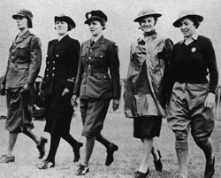

|
Women made the run for new, amazing nylon stockings
by Sarah Lunt
LUN99013@BYUI.EDU
Scroll Staff
 |
| After the war, women were eager to buy nylon stockings, which had been off the market because of war demands. arttoday.com |
|
Stockings have been worn by men and women for centuries.
However, the nylon stocking made its debut early in the 20th century. The DuPont Company displayed the invented nylon at the New York World Fair in 1939. The creators came up with “nylon” by taking the “ny” from the city New York and “lon” from the city London.
These nylon wonders were said to be “stronger than steel” and “run-proof,” according to www.historychannel.com.
It was not until May 15, 1940, that the first nylons were sold in stores across the United States. DuPont declared this day “N-Day.” They were so popular that all the supply — four million pairs of nylon stockings — sold out in the first four days they were on the market.
When the United States entered World War II, the nylon industry concentrated on using nylon for parachutes and aircraft tires.
During the war nylons were very hard, but not impossible to find. The demand for nylons was so high that women would pay around $20 on the black market to get them, up from the original price of a little over $1.
Men in the U.S. Military would take nylons to Britain while stationed there to win the hearts of the English women, according to www.realstockings.com/history.html.
Another indicator of the high demand for nylons is presented in “Bootleg Nylons,” a story in the February 1945 Readers Digest.
The story stated that U.S. agents overseas during World War II discovered that six pairs of nylons would get more information from women in Europe and North Africa than a good-sized bribe.
The article also tells of the extensive measures taken to obtain nylons. Many sold them on the black market, and others fooled women into thinking their product was made of nylon, when really it was not.
Women who did not buy nylons on the black market resorted to other methods. One woman remembers her grandmother telling her that women would use
eyebrow pencils to draw fake seams on their legs and then use gravy browning to give the illusion of a tan, according to www.realstockings.com/history.html.
With the end of World War II, companies were again allowed to manufacture nylon stockings. Eight days after Japan’s surrender, DuPont announced that it would begin making nylons again, according to www.historychannel.com.
Supplies were limited through the remainder of 1945 as manufacturers tried to keep up with demand. Women would wait in long lines outside stores to obtain them, many times becoming disorderly and violent. They became so perturbed when the store sold out that fights would ensue. These fiascos came to be known as the “Nylon Riots.” Luckily, production eventually caught up to demand and the riots ended.
Nylon stockings made the revolution to pantyhose in the 1960s when miniskirts appeared and revealed the top of the stocking.
|